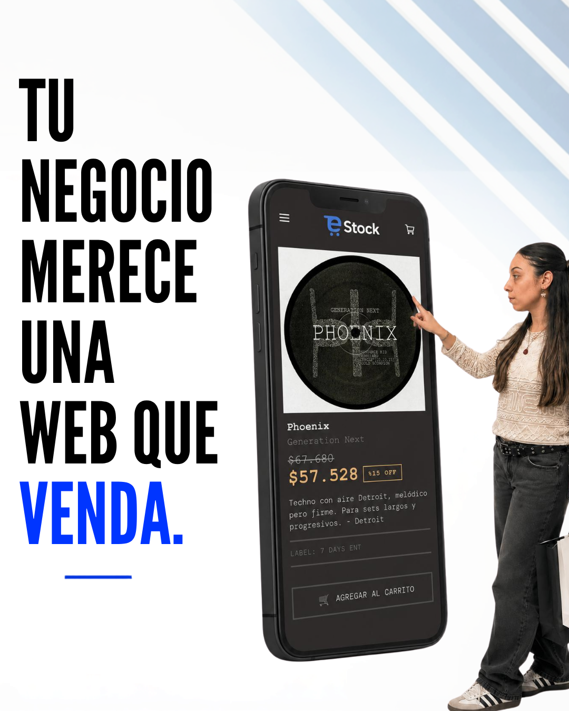

Una tienda online ordenada resuelve la parte operativa: catálogo, pedidos y stock en un solo lugar. Pero tener la tienda lista no garantiza que las personas lleguen. La mayoría descubre productos en Instagram, Facebook o una búsqueda, y decide comprar después de ver contenido que le dio confianza. Por eso en eStock sumamos servicios de marketing digital en conjunto con Carla, de mkt.digital.
Por qué una tienda sola no alcanza
Muchos negocios invierten en una web profesional y esperan que las ventas lleguen solas. Cuando no hay contenido ni campañas, la tienda queda invisible frente a su público. La tecnología sostiene la operación, pero la visibilidad depende de cómo te comunicás todos los días.
Señales de que necesitás acompañar tu tienda con marketing
- Publicás en redes sin un plan ni un calendario claro.
- Tenés productos buenos, pero pocas personas los conocen.
- Invertís en publicidad y no sabés qué anuncio funcionó.
- Recibís consultas, pero no lográs convertirlas en ventas.
Servicios complementarios que ofrecemos con mkt.digital
Trabajamos junto al equipo de Carla para que tu marca tenga presencia, consistencia y resultados medibles en internet:
- Manejo de redes sociales: planificación de contenidos, calendario editorial, respuestas y gestión de comunidad.
- Producción y edición de contenido: fotos, videos y piezas pensadas para cada red y para el público de tu negocio.
- Publicidad en Meta y Google: campañas segmentadas para llegar a las personas correctas y aprovechar mejor la inversión.
- Estrategia de marketing digital: objetivos, mensajes y medición para mejorar mes a mes.
La estrategia de redes, el contenido y la publicidad están a cargo de Carla y su equipo. Podés conocer más en @mkt.digital_carla.

Cómo se combina la tienda con el marketing
La tienda de eStock ordena tu catálogo, tus pedidos y tu stock; el marketing se encarga de que te conozcan y te elijan. Cuando las dos partes trabajan juntas, el resultado es más claro: llegan visitas con interés real, compran más fácil y se puede medir qué funcionó.
Un flujo simple
- Tu tienda queda lista con productos, medios de pago y envíos configurados.
- Definimos la estrategia y el contenido que vas a publicar en redes.
- Se lanzan campañas para atraer público segmentado a tu tienda.
- Medimos resultados y ajustamos contenido, anuncios y publicaciones.
Para quién es este complemento
- Emprendimientos que venden bien, pero no crecen en redes.
- Marcas que publican sin una estrategia ni una línea visual constante.
- Negocios que invierten en publicidad y quieren mejores resultados.
- Tiendas que recién arrancan y necesitan darse a conocer.
Una presencia digital completa
Estar en Instagram no es solo publicar: es tener una estrategia de redes pensada para tu negocio. Con eStock te ocupás de la tienda, el stock y los pedidos, y con el equipo de marketing te ocupás de atraer y fidelizar clientes. Podés conocer más sobre los servicios de Carla en @mkt.digital_carla o ver las funcionalidades de eStock para tu tienda.
¿Querés que tu tienda y tus redes trabajen juntas?
Contanos en qué etapa está tu negocio y te ayudamos a combinar tu ecommerce con una estrategia de marketing digital pensada para crecer.
Hablar con eStock